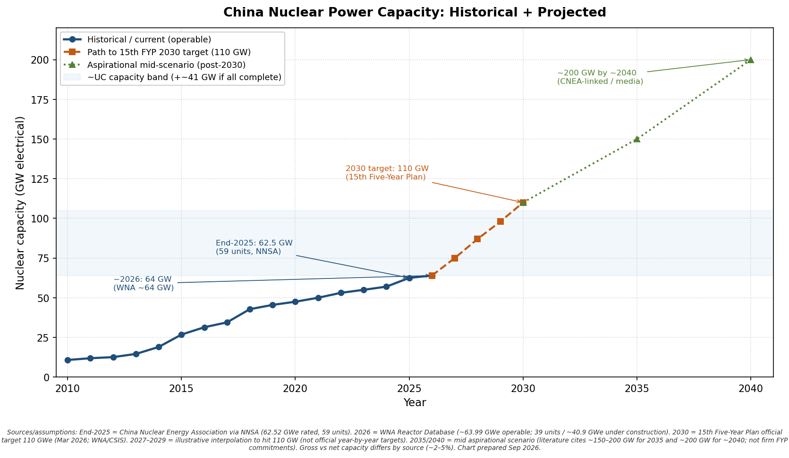

Uranium Map
Western fuel (Cameco), China reactor demand, Kazakhstan / Kazatomprom offtake, and the Namibia supply gap — with AI power as an incremental tightness story.
As of Oct 1, 2026Overview
China’s operable nuclear fleet is on a path from roughly ~64 GW (mid–late 2026) toward the 15th Five-Year Plan target of 110 GW by 2030 — about ~1.8×. UxC-linked estimates put China natural-uranium demand at ~11.5 ktU → ~21 ktU by 2030 (~1.8×; roughly +9–10 ktU/yr). That is the right order of magnitude for reactor fuel requirements if capacity is hit; first cores, capacity factors, enrichment tails, and large stockpiles mean the mapping is not a perfect 1:1.
Kazakhstan (Kazatomprom and Chinese equity JVs) and Namibia (Chinese-operated mines) are the two primary physical pillars of China’s natural-U imports today. Namibia cannot cover the full incremental +9–10 ktU alone; KAP production does not need a mandated +25% hike for China’s reactors to run — growth and market share are commercial choices atop already-guided ~+10% into 2026.
On the Western side, Cameco (CCJ) is a large listed uranium producer tied to higher plant utilization and new builds — including AI-related firm power — but it is a fuel-cycle equity, not a pure AI or merchant-power stock. Nuclear and SMRs are an emerging constraint after nearer equipment bottlenecks (turbines, transformers, queues); the March 2026 Ratepayer Protection Pledge points hyperscalers toward building/bringing/buying generation so AI load does not dump costs on ordinary ratepayers. See the Cameco briefing.
Cameco (CCJ)
Western uranium fuel vs merchant power; AI as incremental tightness; Ratepayer Protection Pledge context.
Open briefing → ⚡China U demand
Fleet ~64→110 GW; U demand ~11.5→21 ktU; stockpile and import nuance.
Open briefing → 🇰🇿Kazakhstan / KAP
CNUC/CNOL offtake, CGN equity JVs, and valuation drivers — analytical, not advice.
Open briefing → 🇳🇦Namibia supply gap
Why Namibian output cannot cover China’s full +9–10 ktU increment alone.
Open briefing →China operable nuclear capacity

Key takeaways
- Demand: ~double reactor U requirements by 2030 if 110 GW is delivered (~11.5→~21 ktU).
- KAP: Already guiding ~+10% production into 2026; a ~25% attributable lift would be a share-gain scenario, not a physical necessity.
- Namibia: Chinese-linked tonnes already ~6.5–7.5 ktU; realistic country increment by ~2030 is only a few ktU — well short of +9–10.
- Stockpile: Large inventories (~132 ktU est. 2022) and 2025 import surge (~27.4 kt) mean near-term buying can diverge from reactor burn.
- Cameco / Western fuel: AI and the Ratepayer Pledge support utilization narratives; fuel-cycle equities remain distinct from merchant generators (e.g. Constellation).
Related — SMR / HALEU
Advanced reactors (Oklo, X-Energy) depend on HALEU and enrichment — Centrus LEU is the main US bottleneck context. Weekly execution gauges (licensing, fuel, offtake, cash) live on the SMR trackers.
Disclaimer
Not investment advice. Figures are compiled from public filings, WNA/UxC/customs summaries, and company disclosures as of Oct 1, 2026 (China/KAP/Namibia core briefings Sep 30, 2026). Contract volumes and prices with Chinese buyers are largely confidential; scenarios are analytical frames only.